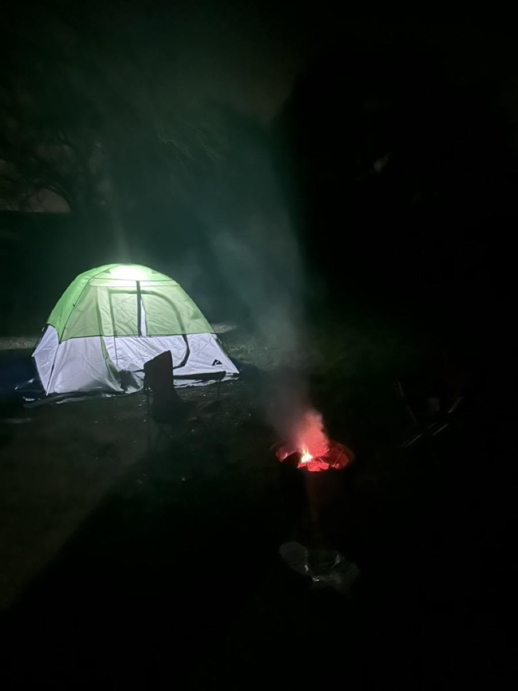

Hi! I'm
Adarsh Rajesh
A CSB student at UT Austin building across AI/ML, systems, backend engineering, and quant.
About
I'm a junior studying computer science honors and business honors (CSB) at the University of Texas at Austin. I work across AI/ML, systems, backend development, and quantitative research.
I'm especially interested in reliable model behavior, efficient infrastructure, and turning research ideas into working systems.
When I’m away from a screen, I play tennis for fun, go camping, travel, spend time around animals, and take food seriously.
Education
-
B.S. in Computer Science & Business Honors
The University of Texas at Austin · Austin, TX
Computer science honors and business honors (CSB), with focus areas in machine learning, algorithms, computer architecture, systems, and finance.
Experience
-
AI Engineering Intern
Alpha AI Engineering · Remote
Extended multi-step retrieval experiments and built QLoRA tutoring-model pipelines for synthetic data, provenance audits, safety filtering, training, and evaluation.
-
Student Research Member, Agentic AI
The University of Texas at Austin · Austin, TX
Analyzed autonomy boundaries, prompt injection, tool misuse, multi-agent coordination, and practical guardrails.
-
Research Member, Commodity Forecasting
Texas Global Macro Team · Austin, TX
Built deep-learning forecasts for global commodities and studied tea-market volatility using trade, weather, and economic indicators.
Projects
Out-of-Order CPU
64-bit processor with register renaming, a reorder buffer, reservation stations, and load-store forwarding.
Screenshot Steps Helper
Cloudflare Workers app that turns screenshots and a goal into click-by-click UI navigation steps with session memory.
Tinker Assembler + Simulator
End-to-end assembler and simulator for a custom 64-bit instruction set, including a matrix-multiply demo.
Product Catalog Entity Resolution
Matches Amazon and Google listings using TF-IDF character n-grams and fuzzy token matching.
Outside the terminal

I play tennis for fun, go camping when I can, and like having a few interests that have nothing to do with a benchmark.
I also enjoy traveling, spending time around animals, and finding good food. The camera roll is a mix of places, campfires, meals, and the occasional photo that is much better as a memory than as a profile picture.
Contact
Reach me at adarsh.rajesh [at] utexas [dot] edu, or through any of these.